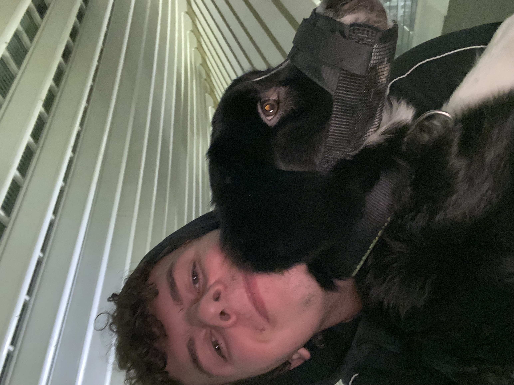

Joey Pronk
I'm 22 and I'm on a journey to become a fully-fledged web, app, and backend developer.

This is me!
My education and courses:
- 2017–2022: Kompaan College Zutphen - Horeca Management.
- 2022–2022: Graafschap College Doetinchem - VeVa.
- 2025–Present: Dr. Angela Yu's Web Development course (Udemy).
My work experience.
-
Technical Support Agent — May 2022–Jan 2024
Worldline — Barcelona
- Helped customers with technical issues related to their account and payment requests (JSON and HTML).
- Supported customers with setting up API, payment methods, and webhooks depending on the integration used.
- Worked with multiple levels of tech support to ensure customer satisfaction and rapid resolution of issues.
- Assisted via phone and email.
-
Scheduling Success Coordinator — Jun 2024–Feb 2025
Agilent — Barcelona
- Coordinated complex scheduling for equipment repair, installation, and maintenance across multiple European regions.
- Prioritized tasks and optimized workflows to minimize downtime and enhance operational fluidity.
- Maintained detailed scheduling reports, ensuring transparency and accountability between departments.
-
Customer Service Representative — Apr 2025–Jan 2026
OneCasino — Barcelona
- Delivered top-tier customer support for global players, managing inquiries related to account access, payments, and responsible gaming.
- Executed full KYC and AML verification processes with 100% compliance to regulatory standards.
- Identified and reported suspicious activity, ensuring platform integrity and secure transactions.
Do you want to know more about me? You can click below to find out more!
My LinkedIn
About me
Contact me